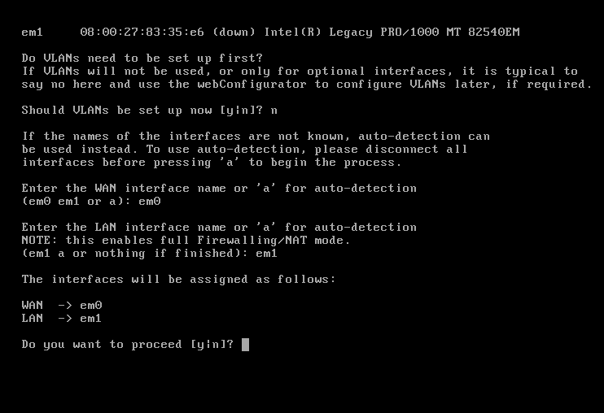
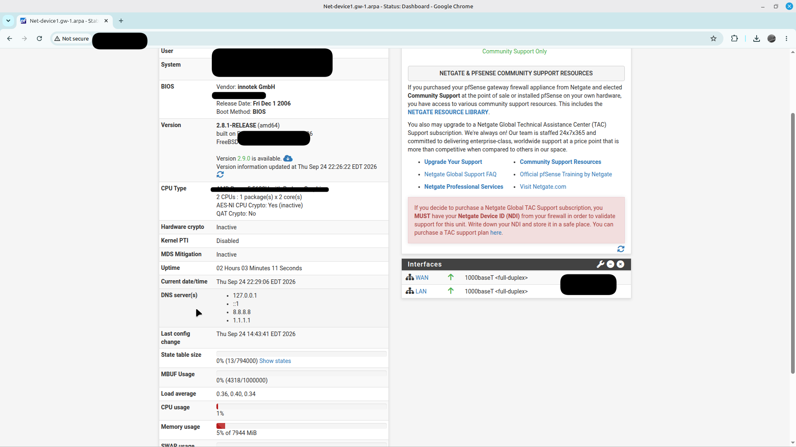
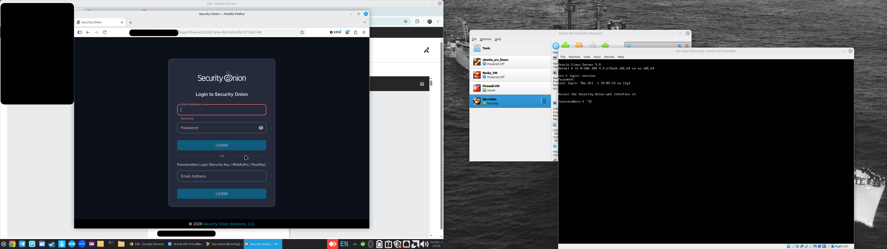
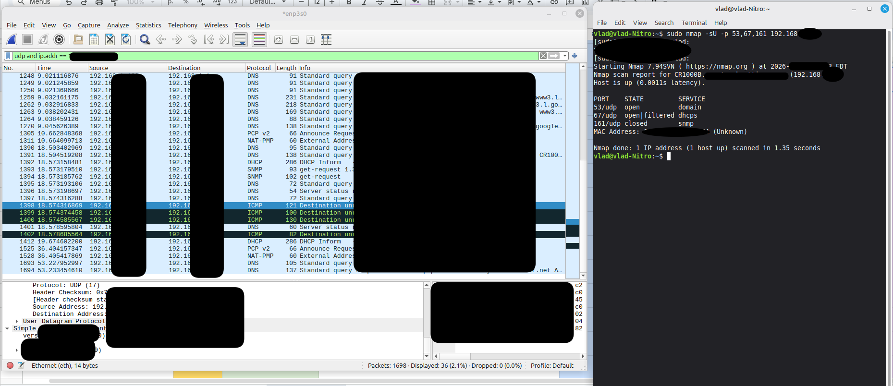
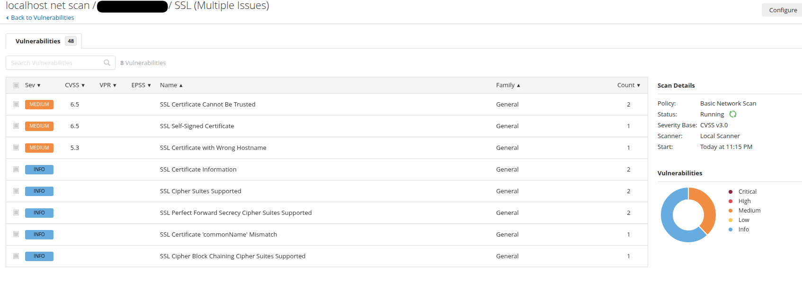

01. Project Overview
This project documents hands-on work with network auditing and security tools in a personal lab environment. The activities combine initial deployment of security platforms with practical network scanning, packet analysis and vulnerability assessment exercises.
The lab includes pfSense and Security Onion virtual machines, Nmap network scanning, Wireshark traffic analysis and Nessus vulnerability assessment.
The current focus has been on deploying the tools, bringing the environments online and gaining practical experience with their interfaces and basic capabilities.
02. pfSense — Firewall Deployment
Deployed pfSense in a virtual lab environment and completed its initial setup, bringing the firewall platform online. Explored the web-based management interface and its available configuration options.


This exercise provided initial experience deploying a firewall platform and navigating its management interface.
03. Security Onion — Security Monitoring Platform
Deployed Security Onion in a virtual machine and completed the initial setup, bringing the platform online. Explored the environment and its interface as an introduction to security monitoring tools.

This deployment provided exposure to a dedicated security monitoring platform and its environment.
04. Nmap & Wireshark — Network Analysis
Practiced network scanning with Nmap and examined network traffic using Wireshark. These exercises helped explore how hosts, UDP services and network protocols can be identified and analyzed.
Nmap — Network Scanning
Performed a UDP port scanning exercise against a device in the personal lab environment, examining the reported port states and associated service names.
- Used Nmap UDP scanning options.
- Examined port states and service identification.
- Reviewed scan output and host response information.
Wireshark — Packet Analysis
Used Wireshark to capture and inspect network traffic, applying display filters and examining packet information across several protocols.
- Applied display filters to narrow packet captures.
- Examined DNS, DHCP, SNMP and ICMP traffic.
- Inspected packet details and protocol information.
- Observed network responses and ICMP destination-unreachable messages.

Using both tools provided an opportunity to compare scan results with observed network traffic and explore how network protocols behave.
05. Nessus — Vulnerability Assessment
Performed a local vulnerability assessment scan of a personal computer using Nessus. Reviewed the scan results to explore identified vulnerabilities, security findings and their assigned severity levels.

This exercise provided practical exposure to vulnerability scanning workflows and the process of reviewing security assessment results.
06. Planned Lab Development
The current lab is an initial foundation for a more integrated home network security environment. A separate router is available for the next stage of development.
Configure VLANs on the available router and develop a segmented home network environment.
Develop firewall configuration and network access policies for the segmented environment.
Explore integration of network traffic monitoring and Security Onion with the home network.
These improvements will extend the current standalone lab deployments into a more integrated network security environment.
07. Technical Skills Demonstrated
- Virtual machine deployment and initial configuration
- Firewall platform deployment using pfSense
- Security monitoring platform deployment using Security Onion
- Network scanning with Nmap
- UDP port and service analysis
- Packet capture and protocol analysis with Wireshark
- DNS, DHCP, SNMP and ICMP traffic inspection
- Vulnerability assessment using Nessus
- Review of vulnerability findings and severity levels
- Network segmentation concepts and planned VLAN deployment
08. Project Summary
This lab provided hands-on experience deploying network security platforms and using tools for network scanning, traffic analysis and vulnerability assessment.
The work is an ongoing learning project. Future development will focus on VLAN segmentation, firewall configuration and integration of security monitoring into the home network.
These activities complement my practical networking, Linux and infrastructure experience and support my continued development in network security.
← Back to Portfolio